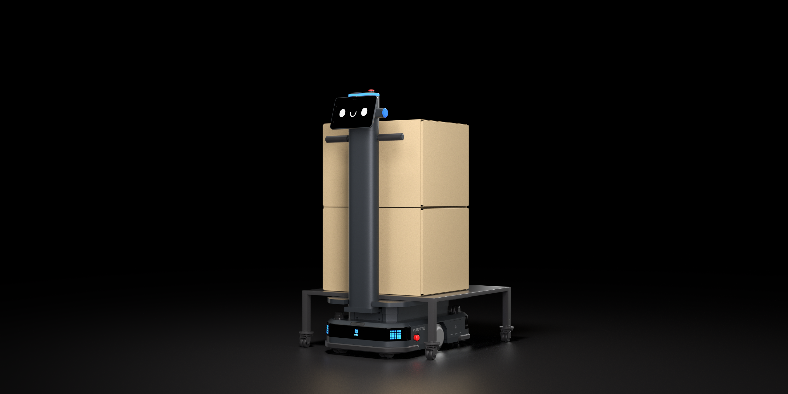

Rýchle nasadenie
Mapovanie a základné spustenie bez stavebných úprav alebo komplikovanej infraštruktúry.
Kompaktný priemyselný robot pre diely, komponenty a pravidelné logistické okruhy.
← Späť na všetky produkty
Kompaktný priemyselný robot pre diely, komponenty a pravidelné logistické okruhy. Vďaka autonómnej navigácii, bezpečnostným vrstvám a možnosti integrácie sa prispôsobí existujúcemu prostrediu bez toho, aby výrobu nútil prispôsobiť sa robotu.
Každá funkcia je navrhnutá tak, aby zjednodušila každodennú manipuláciu a vytvorila predvídateľný logistický tok.
Mapovanie a základné spustenie bez stavebných úprav alebo komplikovanej infraštruktúry.
Kombinácia VSLAM a LiDAR zabezpečuje stabilný pohyb v dynamickom priemyselnom prostredí.
Výmena batérie, automatické aj káblové nabíjanie podporujú nepretržitú logistiku.
Viacúrovňová detekcia prekážok pomáha robotu bezpečne pracovať v spoločnom priestore s ľuďmi.
Automatické nabíjanie a premyslený energetický manažment podporujú celodenné logistické scenáre.
Od jednej trasy po koordinované nasadenie viacerých robotov, pracovísk a podnikových systémov.
Dohodnite si ukážku a návrh pilotnej trasy vo vašej prevádzke.
Dohodnúť ukážku